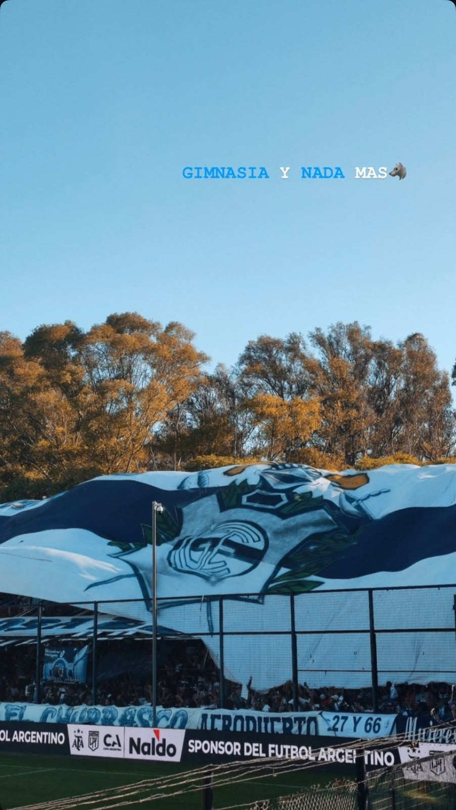
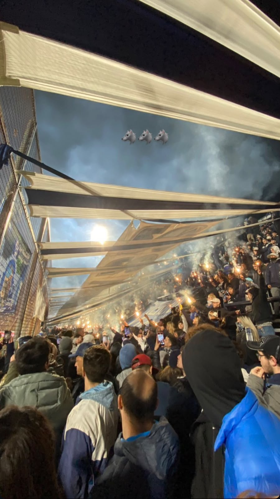
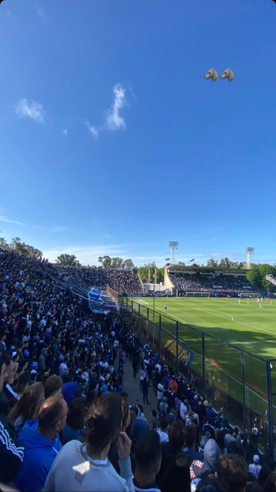
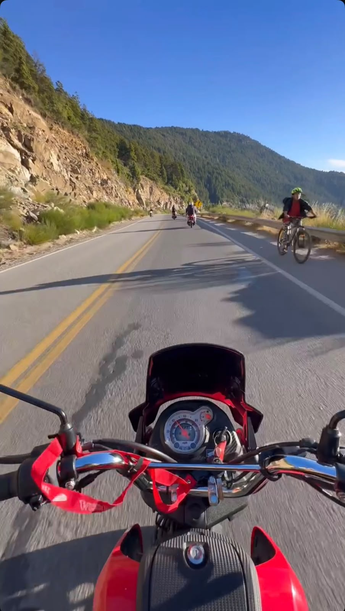
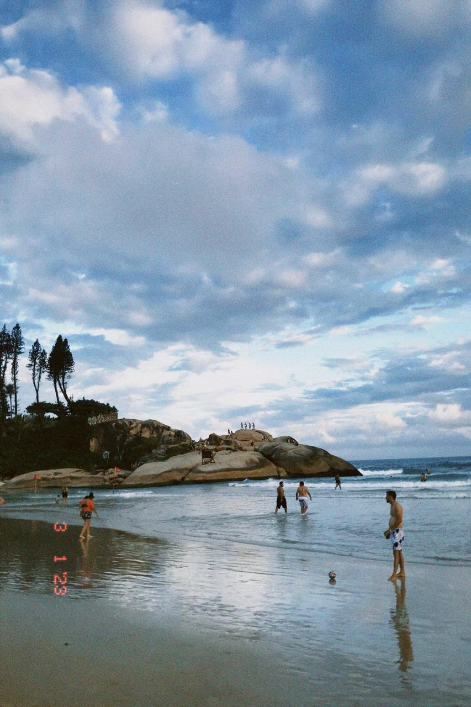

Sexo, sudor y calor
Es una de las producciones que más me gusto hacer y que forma parte de mis preferidos actualmente.
Una pequeña colección de cosas que me gustan, recuerdos que guardo y lugares que conocí.
Hay cosas que me gustan tanto que terminan convirtiéndose en mi fuente de energia. Estas son tres de ellas.
Es una de las producciones que más me gusto hacer y que forma parte de mis preferidos actualmente.
Otra de mis recintes producciónes y que elegí para esta colección.
Una de mis primeras producciones y le tengo un cariño especial.
Algo que tienen en común es que todas megeneran la misma pasion y hacen que quiera seguir tocando.
Porque representan algunos de los momentows que más recuerdo y que forman parte de mis presetaciones.
Podés conocer más sobre mis producciones en Youtube .
Algunas cosas no se pueden guardar en una caja, pero sí pueden quedar en nuestra memoria. Por eso elegí crear una colección de recuerdos con la cancha de Gimnasia.

Un lugar que forma parte de momentos importantes.

Cada foto representa un momento diferente que vivi .

Una imagen más para completar esta colección de recuerdos.
Los lugares también pueden guardar recuerdos. — Reflexión personal
Para mí, estas imágenes representan algo más que una foto. Son recuerdos de momentos que quiero conservar en mi vida.
Esta colección fue pensada durante .
Viajar también significa colccionar recuerdos. Este es mi top 3 de lugares que conocí en mi vida .

Bariloche ocupa el primer puesto porque tengo recuerdos especiales de este viaje .

Una experiencia que quiero recordar por siempre.

Otro lugar que quedó guardado como un recuerdo importante de mis viajes . Brasil tiene las playas mas hermosas que vi
Todos representan momentos diferentes y experiencias que me emociona haber vivido.
Este ranking es personal y está basado en mis propios recuerdos.
Para conocer más lugares de Argentina podés visitar Argentina Turismo .